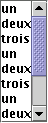
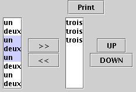

Q : Quand on ajoute un élément dans JTable, la taille des colonnes est modifiée (souvent diminiuée).
Pas evident de gerer la taille des composants et aussi le fait qu'ils soient visibles, notamment dans les DialogEnditEnregistrement.
By default, in a JTable, columns can be moved without altering the TableModel.
In our case, we could either (1) prevent such reordering, (2) do nothing to
the internal Model or (3) change the Model as well (using a Listener).
-- We have chosen : (2).
JCellStr :
JEnregistrement : 
JHeader : 
JHeaderChoice : 
JTableData :